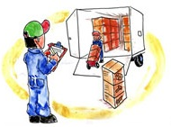

Desarrollar nuestras capacidades para mejorar nuestro trabajo.
Mejorar continuamente nuestros procesos y ser participe de ellos.
Asegurar el cumplimiento de los requisitos de nuestros clientes.
Asegurarnos de la satisfacción de nuestros clientes.
Adquirir las mejores materias primas, productos y servicios de nuestros proveedores.
